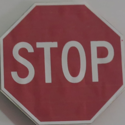
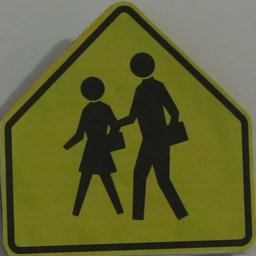
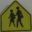
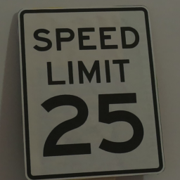
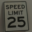

BuggyBot · Lesson 1
The Semester 1 demo, end to end
You hold a printed traffic sign in front of a small computer with a camera. A second later its LCD names the sign. This lesson explains how one camera frame becomes that answer, and how much the results prove.
What BuggyBot is, and what this demo is not
BuggyBot is a senior project (CENG 4265, University of Houston–Clear Lake) to build a small car that follows a course and obeys traffic signs. The work is split in two. Fall is a stationary sign-recognition system. Spring is the moving car.[1]
The hardware
The CM5 (Compute Module 5) is a Raspberry Pi 5 packaged as a plug-in module. The IO Board supplies its ports.[2] It runs Raspberry Pi OS Lite with no desktop, which is why you watch the camera in a browser rather than on a screen attached to the Pi. A motor board, line sensors, and a motion sensor are wired to the Pi for spring, but the demo does not use them.
One frame through the pipeline
The camera delivers frames continuously. While the demo is searching, each frame goes through these steps:[3]
- Capture. The Pi reads a 1280×720 color frame from the camera.
- Propose. OpenCV, a classic image-processing library, finds regions that could be signs. It marks pixels that are strongly colored or lie on a sharp edge, then traces the outlines of those blobs (contours). It keeps blobs that are a plausible size and roughly square, and passes at most 8 on.
- Classify. Each region is cut out as a square, shrunk to 32×32 pixels, and given to a small convolutional neural network (CNN), a model that learns visual patterns from labeled examples. It returns one of 12 sign labels and a confidence between 0 and 1. The model is a 621 KB file run with LiteRT, Google's lightweight runtime for running models on small devices.
- Reject. A guess survives only if its confidence is at least 0.85 and the region has the right color and outline for that sign. For example, a stop guess must be a solid red octagon.
- Confirm. The best surviving guess must be the same sign on 3 frames in a row. A single blurry frame as you move the card can't reach the display.
- Output. The LCD shows the sign name and confidence, with its backlight in the sign's color (red, amber, or white). The demo holds that result for 3 seconds without searching, then goes back to searching with a green backlight. The browser stream draws boxes around each match.

→
→

→
Why the model isn't enough on its own
The CNN is a classifier: given a picture, it answers which of my 12 signs is this? It has no answer for none of them, so it always picks one. Show it a red hand and it may say "stop" with high confidence.[4]
It also can't search a whole frame for signs. That is the job of a detector. BuggyBot builds one from parts. OpenCV proposes regions (step 2), the classifier labels them (step 3), and color and shape rules throw out labels that can't be true (step 4). Each rule in step 4 was added after a specific false positive in testing, such as skin, a shirt, a wooden stick, or one arrow cut from a larger sign.[5]
What the results show, and what they don't
| Test | Result | What it covers |
|---|---|---|
| Model on held-out dataset images | 99.31% | 1,016 crops of real road signs from two public datasets (LISA and Mapillary). Not BuggyBot's camera. |
| Model on BuggyBot camera crops | 329 / 329 | Photos of the printed cards, about 30 setups, 10 classes, three lighting conditions. The crops were placed by hand, so OpenCV wasn't tested. |
| Live demo, final test | 60 / 60 | The full pipeline: 10 classes, 3 times each, over two runs, in two different rooms. Counts correct LCD outputs. |
| Speed on the CM5 | 1.9 ms | Average model time per crop, in the 10/28 integration test. |
Only 10 of the 12 classes are tested because speed limits 30 and 35 aren't used on the course.[6] Not yet measured: distance, viewing angle, and lighting beyond the two rooms tested. A fair summary is that the full system worked every time under demo conditions, and its limits haven't been tested yet.
Check yourself
Answer from memory before scrolling back. Each answer locks on the first click.
Read next
Primary source: the OpenCV sign demo README. It's short, it's the team's own description of the demo, and it covers how to run it. For the reasoning behind every rejection rule, read the troubleshooting guide.
Keep the demo cheat sheet open for the numbers and terms.
Anything unclear? Ask your agent (run /teach in the BuggyBot repo) or a team member. Follow-up questions are the fastest way to fill gaps.